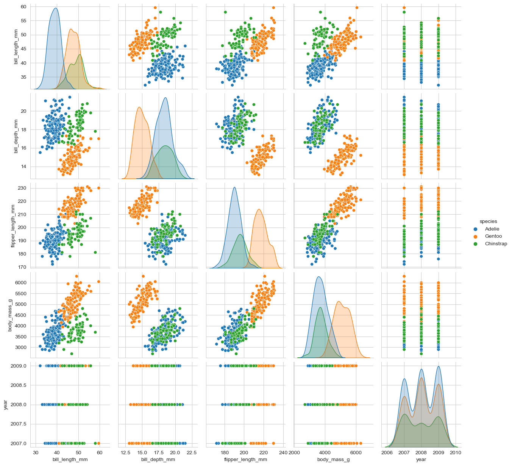

Model 2 - Decision Trees in Python with Penguin dataset
Machine learning
Statistics
Data Science
Python
Classification
Author
I. Muliterno
Published
March 7, 2023
In our previous post, we discussed linear regression. Today, we will get familiar with decisions trees, but before that, you gotta understand what’s a classificationproblem.
Classification is an important task in machine learning, with numerous applications in fields such as healthcare, finance, and marketing. One popular classification algorithm is decision trees, which use a tree-like model of decisions and their possible consequences to predict the target variable. In this post, we will provide a step-by-step guide to implementing decision trees for classification using Python and the Penguin dataset.
Decision Trees
Decision trees are a type of classification algorithm that use a hierarchical structure to model decisions and their outcomes. They work by partitioning the data into subsets based on the values of the input features, and then recursively dividing each subset into smaller subsets until the target variable is predicted with a high degree of accuracy. Decision trees have several advantages over other classification algorithms, including their interpretability, ability to handle both categorical and numerical data, and flexibility in handling missing values.
Dataset Description
The Penguin dataset is a well-known dataset that contains information about the physical characteristics and species of penguins. It consists of 344 samples with 8 input features and 1 target variable (the species of the penguin). In this section, we will describe the structure of the dataset and the importance of data preprocessing in the context of decision trees.
The first step in any machine learning project is to load and explore the data. To load the Palmer Penguins dataset, we will use the load_penguins function from the palmerpenguins library. We will also import pandas to create a dataframe to store the data, and seaborn and matplotlib to visualize the data.
import pandas as pdimport matplotlib.pyplot as pltfrom sklearn.tree import DecisionTreeClassifierfrom sklearn.model_selection import train_test_splitfrom sklearn.metrics import accuracy_score, precision_score, recall_score, confusion_matrixfrom sklearn.metrics import f1_scorefrom sklearn.tree import export_graphvizimport graphvizimport seaborn as sns from palmerpenguins import load_penguinsfrom sklearn.preprocessing import StandardScalerimport pandas as pdimport seaborn as sns from palmerpenguins import load_penguinssns.set_style('whitegrid')penguins = load_penguins()penguins.head()
species island bill_length_mm ... body_mass_g sex year
0 Adelie Torgersen 39.1 ... 3750.0 male 2007
1 Adelie Torgersen 39.5 ... 3800.0 female 2007
2 Adelie Torgersen 40.3 ... 3250.0 female 2007
3 Adelie Torgersen NaN ... NaN NaN 2007
4 Adelie Torgersen 36.7 ... 3450.0 female 2007
[5 rows x 8 columns]
The head function is used to display the first few rows of the dataset. This is useful to check that the data has been loaded correctly and to get a quick overview of the data. Now let’s look for missing values.
# Check for missing valuesprint(penguins.isnull().sum())
species 0
island 0
bill_length_mm 2
bill_depth_mm 2
flipper_length_mm 2
body_mass_g 2
sex 11
year 0
dtype: int64
we don’t always just drop na, but sckitlearn classifiers aren’t able to handle missing values plus we will lose only a few rows, so let’s take the easy way out here. An alternative could be `filling NA`, but it can be dangerous specially if you rely in simple methods like, just using the average value to fill the gaps. Note that, in the real world, we usually deal with many more missing values and the answer could be trying to enrich the dataset with external information, testing another classification model which can deal with missing values or checking more advanced methods to fill the gaps, how would you like a post about that?
# drop missing values penguins = penguins.dropna()# Double Check for missing valuesprint(penguins.isnull().sum())
species 0
island 0
bill_length_mm 0
bill_depth_mm 0
flipper_length_mm 0
body_mass_g 0
sex 0
year 0
dtype: int64
Now that we have checked for missing values, we can visualize the distribution of the target variable using a histogram. In this case, the target variable is the species of the penguin.
# Plot the distribution of the target variableplt.hist(penguins['species'])
We can see that the dataset contains three species of penguins: Adelie, Chinstrap, and Gentoo.
Finally, we can use a scatter matrix plot to visualize the pairwise relationships between the features. This is useful to understand the relationships between the features and to identify any potential correlations, or even if there’s a variable worth removing.
# Plot the pairwise relationships between the featuressns.pairplot(data=penguins, hue='species')

This is a very revealing plot, we can see, for example, that some features are very correlated, meaning that we could probably remove flipper_length_mm for example, and leave body_mass, because they are correlated, you can see what I’m talking about if you look to the graph at row 3 column 4. We also can see how the features interact with the species of the penguins, look at row 4 column 4, for example and you will find out that most of Gentoo penguins are heavier than the others, this indicates that body mass may be important predictor for our decision tree model.
Ok, now we’re read to prep the data
Data Preprocessing
In this section, we will preprocess our dataset before we move on to the modeling phase. Preprocessing is an important step in machine learning as it involves cleaning, transforming, and engineering the data to make it suitable for modeling.
First, we make a copy of the original penguins DataFrame, since it’s good practice to keep the original data intact, and define our categorical variables. In our case, the categorical variables are island and sex. We then iterate through each categorical variable and create dummy variables using the pd.get_dummies() function. This creates a binary indicator variable for each possible category. Next, we concatenate the dummy variables with the original DataFrame and drop the original categorical variables.
# Make a copy of data_size DataFramedata_df = penguins.copy()# Define categorical variablescat_vars = ['island', 'sex']# Iterate through categorical variables and create dummy variablesdummy_vars = []for var in cat_vars: dummy_var = pd.get_dummies(data_df[var], prefix=var) dummy_vars.append(dummy_var)dummy_df = pd.concat(dummy_vars, axis=1)data_df = pd.concat([data_df, dummy_df], axis=1)data_df = data_df.drop(cat_vars, axis=1) # Define final list of variablesdata_final_vars = ['bill_length_mm','bill_depth_mm', 'flipper_length_mm', 'body_mass_g', 'island_Biscoe','island_Dream', 'sex_female']y = penguins['species'].valuesX = data_df[data_final_vars].values
We also define our final list of variables, which are the numeric features we will use in our decision tree model. The target variable is defined as y and the independent variables are defined as X.
Now let us perform scaling on our numeric features using StandardScaler(). This standardizes our numeric features so that each feature has a mean of 0 and standard deviation of 1. This is an important step as decision trees are sensitive to the scale of the features.
# Scale the numeric featuresscaler = StandardScaler()scaled = scaler.fit_transform(penguins[['bill_length_mm','bill_depth_mm', 'flipper_length_mm', 'body_mass_g']])scaled_df = pd.DataFrame(scaled, columns = ['bill_length_mm','bill_depth_mm', 'flipper_length_mm', 'body_mass_g'])scaled_df.head()# Copy the scaled data back to the main dataframe
Now let’s train our decision tree model to predict the species of penguins based on the independent variables we identified in the previous section.
The first step in model training is to split the dataset into training and testing sets. We used the train_test_split function from scikit-learn library to randomly split the data into 80% for training and 20% for testing. This step is important to ensure that the model is not overfitting to the data, meaning that it is not just memorizing the training data but can generalize well to new, unseen data.
# Split the data into training and testing setsX_train, X_test, y_train, y_test = train_test_split(X, y, test_size=0.2, random_state=42)
Next, we built the decision tree model using the DecisionTreeClassifier function from scikit-learn library. We set the maximum depth of the tree to 3 and used a random state of 42 to ensure that our results are reproducible. The max_depth parameter controls the complexity of the tree, and we chose 3 to balance between underfitting and overfitting.
After building the model, we made predictions on the test set using the predict function of the decision tree classifier. These predictions will be used to evaluate the performance of our model in the next section.
# Build the decision tree modeltree = DecisionTreeClassifier(max_depth=3, random_state=42)tree.fit(X_train, y_train)# Make predictions on the test set
After building our decision tree model, it is important to evaluate its performance. We can use various metrics to evaluate the model, including accuracy, precision, recall, and the confusion matrix. Before getting to the code, let’s understand the metrics.
The accuracy score tells us the percentage of correctly classified instances out of all instances.
accuracy = (number of correct predictions) / (total number of predictions)
The precision score tells us the percentage of instances that were correctly classified as a certain class out of all instances classified as that class.
F1 score is the harmonic mean of precision and recall. It is a measure of the balance between precision and recall and is a useful metric when dealing with imbalanced datasets.
In these formulas, true positives are the number of correctly predicted instances of a particular class, false positives are the number of instances that were incorrectly predicted as that class, and false negatives are the number of instances of that class that were incorrectly predicted as another class.
The confusion matrix is a table that shows the number of true positives, true negatives, false positives, and false negatives for each class.
# Evaluate the modelprint("Accuracy: {:.2f}%".format(100* accuracy_score(y_test, y_pred)))
We can see that our model has an accuracy of 97%, which means it correctly classified 97% of instances. The precision and recall scores are also high, indicating that our model performed well in classifying instances for each class. The confusion matrix provides us with more detailed information about the number of correctly and incorrectly classified instances for each class.
Let’s take a look at the decision tree we made.
# Visualize the decision treedot_data = export_graphviz(tree, out_file=None, feature_names=data_final_vars, class_names=['Adelie', 'Chinstrap', 'Gentoo'], filled=True, rounded=True, special_characters=True) graph = graphviz.Source(dot_data) # create the plot as a png file on your directory#graph.render("penguins_decision_tree.png")
Each box is called ‘node’, the node shows the rules and the subsets created, it comes together with Gini index, so we can track how pure each node gets.
Let’s take a better look at the Gini index: \[
Gini = 1 - \sum_{i=1}^c (p_i)^2
\]
Where:
\(c\) is the number of classes in the target variable
\(p_i\) is the proportion of observations belonging to class i in the node
The Gini index ranges from 0 to 1, where a Gini index of 0 means all observations in the node belong to the same class (pure node), and a Gini index of 1 means that the node contains an equal proportion of observations from each class (impure node). In general, a lower Gini index indicates a better split for the decision tree.
You got it! We’ve covered a lot of ground in this post, from exploring our dataset and identifying key features, to preprocessing our data and training a decision tree model to predict penguin species. And the best part? Our model performed really well. Next we will talk about random forest, until then, keep coding!